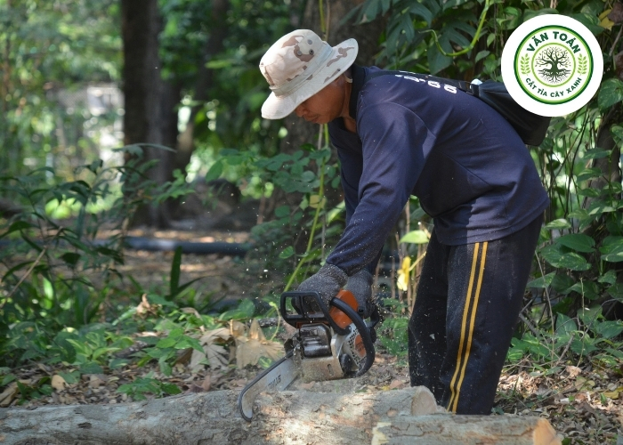
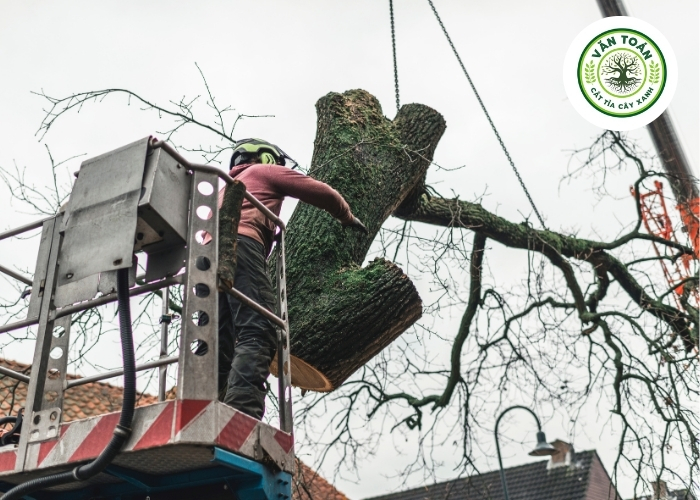
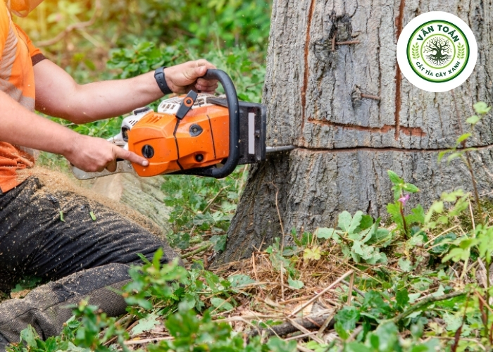

Dịch Vụ Cưa Cây, Chặt Cây
Cây Xanh Văn Toán tự hào là đơn vị cung cấp dịch vụ cưa cây, chặt cây, cắt tỉa cành chuyên nghiệp hàng đầu tại khu vực TP.HCM và các tỉnh lân cận. Với phương châm hoạt động "An toàn – Uy tín – Trách nhiệm", chúng tôi đã và đang trở thành người bạn đồng hành tin cậy của hàng nghìn hộ gia đình, công ty, xí nghiệp và các công trình xây dựng.
Chúng tôi hiểu nỗi lo của bạn khi:
- Cây quá cao, vươn ra sát nhà, mái tôn, đường dây điện.
- Cành khô, cây mục có nguy cơ gãy đổ sau mưa bão.
- Cây chết, cây nghiêng, có nguy cơ đổ gây nguy hiểm.
- Cây mọc um tùm, che khuất tầm nhìn, cản trở lối đi.
- Không có dụng cụ chuyên dụng, hoặc tự ý cưa gây mất an toàn.
Liên hệ đặt dịch vụ cưa cây, chặt cây - Cây Xanh Văn Toán
Cây Xanh Văn Toán luôn cam kết đào tạo đội ngũ thợ giàu kinh nghiệm, trang thiết bị hiện đại, quy trình bài bản, cam kết xử lý mọi vấn đề về cây xanh một cách nhanh chóng và an toàn nhất.

Các Dịch Vụ Cung Cấp
Dịch vụ cưa cây, cắt cành trên cao:
- Cắt tỉa cành vươn xa, cành sát nhà, cành che khuất ban công.
- Hạ thấp độ cao của cây, tạo tán.
Dịch vụ chặt cây, đốn hạ cây xanh:
- Chặt cây khô, cây chết, cây bị sâu bệnh.
- Đốn hạ cây có dấu hiệu nghiêng, đổ, nguy hiểm.
- Xử lý cây sau bão lũ.
Dịch vụ cưa cây có rủi ro cao:
- Cây mọc sát tường rào, sát nhà dân.
- Cây vướng vào đường dây điện, cáp viễn thông.
- Cây lớn trong không gian chật hẹp (sử dụng kỹ thuật hạ cây từng đoạn bằng dây tời).
Dịch vụ cưa cây thuê theo yêu cầu:
- Cưa cây ăn trái, cây kiểng quá cao.
- Cưa cây giải phóng mặt bằng.
Dịch vụ vệ sinh và xử lý sau thi công:
- Băm nhỏ cành lá (nếu có máy băm).
- Cưa khúc, xếp gọn gỗ (nếu khách có nhu cầu giữ lại).
- Dọn dẹp sạch sẽ hiện trường sau khi hoàn thành.
Bảng Giá Tham Khảo Dịch Vụ Cưa Cây, Chặt Cây
Giá dịch vụ phụ thuộc vào nhiều yếu tố. Hãy liên hệ để được báo giá chính xác nhất.
| STT | Kích Thước Cây | Giá Tiền (VNĐ) |
|---|---|---|
| 01 | Đường kính 5 cm x Cao 3 m | Liên hệ |
| 02 | Đường kính 7 cm x Cao 3 m | Liên hệ |
| 03 | Đường kính 9 cm x Cao 3 m | Liên hệ |
| 04 | Đường kính 11 cm x Cao 3.5 m | Liên hệ |
| 05 | Đường kính 13 cm x Cao 3.5 m | Liên hệ |
| 06 | Đường kính 15 cm x Cao 3.5 m | Liên hệ |
| 07 | Đường kính 17 cm x Cao 3.5 m | Liên hệ |
| 08 | Đường kính 19 cm x Cao 3.5 m | Liên hệ |
| 09 | Đường kính 21 cm x Cao 4 m | Liên hệ |
| 10 | Đường kính 23 cm x Cao 4 m | Liên hệ |
| 11 | Đường kính 25 cm x Cao 5 m | Liên hệ |
| 12 | Đường kính 27 cm x Cao 5 m | Liên hệ |
| 13 | Đường kính 29 cm x Cao 5 m | Liên hệ |
| 14 | Đường kính 31 cm x Cao 10 m | Liên hệ |
| 15 | Đường kính 33 cm x Cao 10 m | Liên hệ |
| 16 | Đường kính 35 cm x Cao 10 m | Liên hệ |
Quy Trình Làm Việc
Tiếp Nhận Yêu Cầu
Tiếp nhận thông tin và tư vấn sơ bộ theo nhu cầu khách hàng.
Khảo Sát & Báo Giá
Khảo sát thực tế, đề xuất giải pháp và báo giá minh bạch.
Thi Công & Bảo Hành
Triển khai nhanh chóng, đảm bảo chất lượng và chăm sóc sau dịch vụ.
Hình Ảnh Thi Công Thực Tế



Giải Pháp Cưa Cây, Chặt Cây An Toàn Từ Cây Xanh Văn Toán
- Đội ngũ thợ lành nghề: Hơn 10 năm kinh nghiệm, xử lý cây rủi ro cao an toàn.
- Trang thiết bị hiện đại: Máy cưa xăng chính hãng Stihl, dây thừng chuyên dụng, xe cẩu hỗ trợ.
- Dịch vụ đa dạng: Cắt tỉa, chặt cây khô, xử lý sau bão, cây vướng điện.
- Cam kết dọn dẹp: Trả lại mặt bằng gọn gàng, sạch sẽ.
Với Cây Xanh Văn Toán, bạn không chỉ thuê một dịch vụ, mà đang đặt niềm tin vào những người thợ tận tâm, luôn đặt sự an toàn của khách hàng lên hàng đầu.
Hãy liên hệ ngay hôm nay để được tư vấn và báo giá hoàn toàn miễn phí!